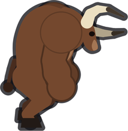

Dungeons & Desktops
An idle desktop pet built as a procedural animation experiment.
No sprites. Every creature is math — AI-simulated agents that live on your real windows.
What it is
Dungeons & Desktops is an idle game that treats your desktop as the level. Windows become terrain. Creatures path, fight, and idle across that geometry while you work.
Under the surface it is a systems piece: locomotion, inverse kinematics, combat steering, and desktop window sensing — all feeding AI-simulated creatures with no hand-drawn frame cycles.
It exists as a portfolio experiment in computer science: can expressive animation come from simulation alone?
